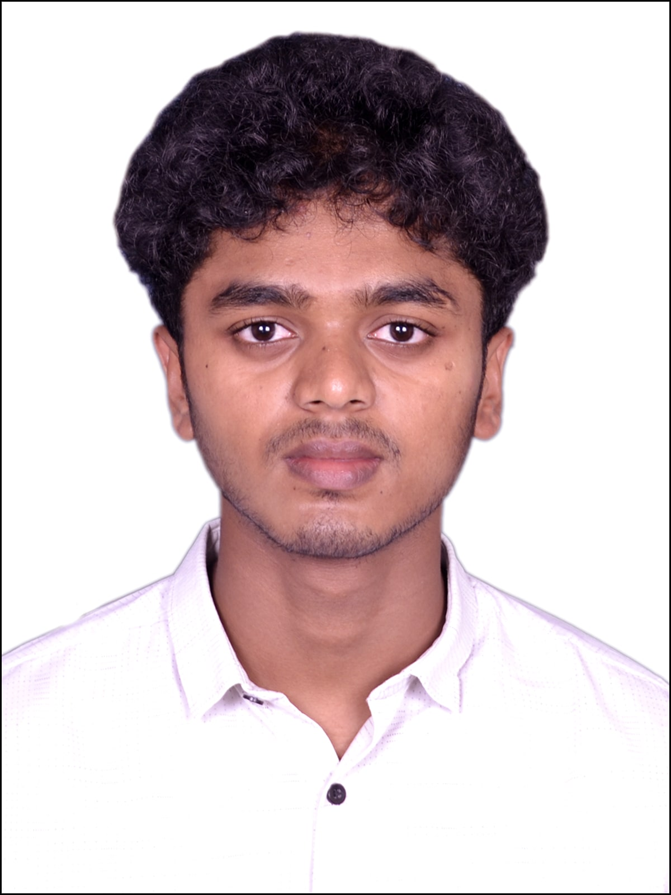

Yashwanth S

Summary
Results-driven fresher with a background in Computer Science & Engineering, showcasing skills in software development.
Proficient in Java, SQL, HTML & CSS, JS, React JS & various tools. Exceptional skills in communication, collaboration & technical documentation.
Seeking a challenging position in a reputed organization where I can learn new skills, expand my knowledge & leverage my learnings.
Education
Presidency University, Yelahanka, Bangalore, Karnataka, India 2019-2023
- Computer Science and Engineering | CGPA: 6.89
St. Francis Composite PU College, Koramangala, Bangalore, India 2017-2019
- State Board (PUC), Percentage: 70.5%
Carmel Convent High School, Carmelaram, Bangalore, India 2016-2017
- State Board (SSLC), Percentage: 76.48%
Skills
Java Programming | C | MySQL | HTML & CSS | React JS | Research Skills | MS Office Proficiency | Communication Skills (Verbal and Written) | Analytical and Logical Thinking | Organizational Skills
Projects
Accurate prediction of diseases based on symptoms of patients using machine learning algorithms. Jan’24 – Mar’24
- Final Year Engineering Project Team Lead
- Led a team of 4 members in developing the project.
- Organizing team meetings and delegating tasks effectively.
- Coordinating with faculty advisors to ensure project milestones were met.
- Resolving conflicts and ensuring team cohesion throughout the project lifecycle.
- Focused on front-end development, contributing to the user interface enhancements and overall user experience.
- Collaborating with team members to troubleshoot and address issues, ensuring optimal functionality.
- Gaining practical experience in web development practices, methodologies, and technologies.
IOT based automated pet food feeder:
- Developed an Arduino based automatic pet feeder which can be used by busy pet owners, animal shelters etc. It dispenses food at given intervals with or without supervision and can also be controlled via Bluetooth.
- Played a key role in implementing design improvements and ensuring functionality aligned with user expectations.
IOT based fully automated irrigation system:
- Developed an Arduino based automatic irrigation system for watering home plants based on soil moisture level where the user can monitor the status using Bluetooth.
POSITIONS OF RESPONSIBILITY
- Organized several major activities that were focused on community service & social responsibility like Blood donation camps, Plantation drives, Cleanliness drives, Awareness programs.
- Community engagement and reporting.
Others